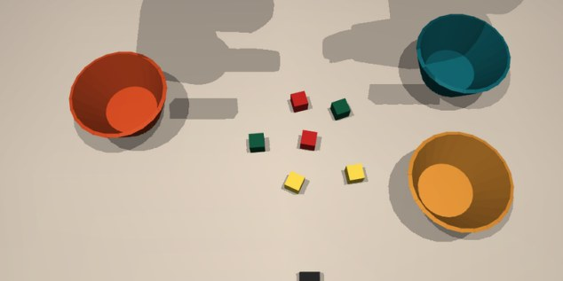
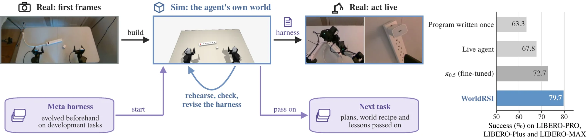
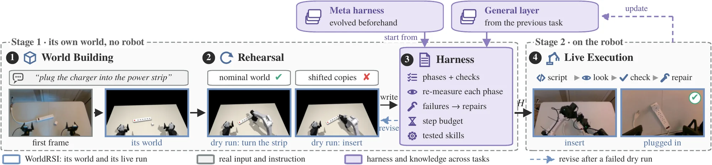
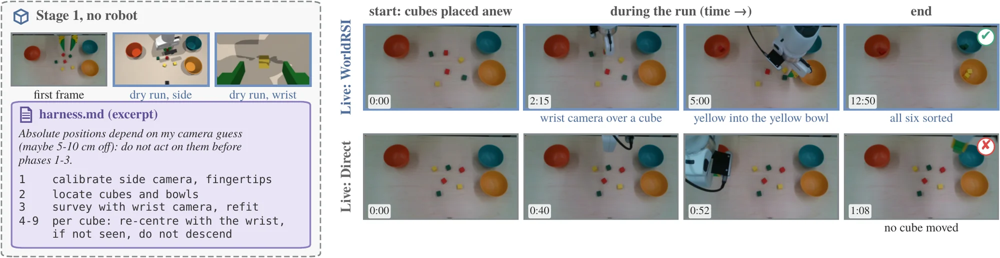
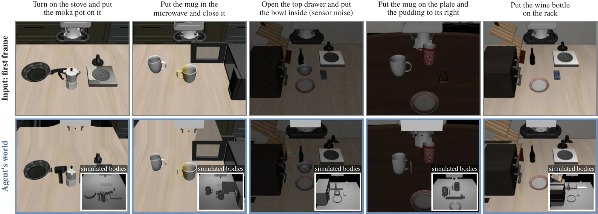
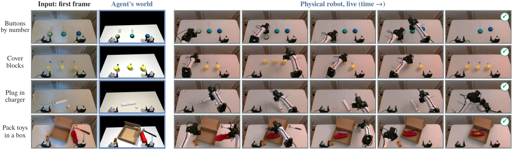
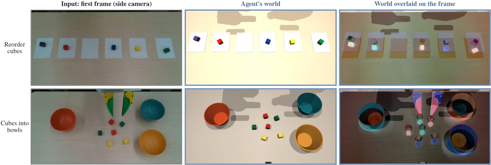
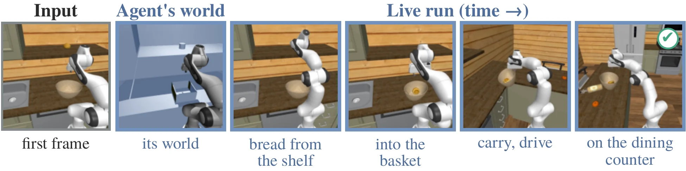

WorldRSI: Robot Agents That Build Worlds to Improve Themselves
1Tulane 2UCSD 3UNC 4UMich


Real first frame Agent's worldThe world it builds
From the first camera frames alone, the agent builds a physics simulation of the scene and rehearses the task there before it acts on the real robot. Drag across the image to compare.
Abstract
Large multimodal models can now control robots as agents that read camera images and write code, with no task-specific training. Yet in a new scene such an agent sees only a few frames and gets a single attempt. A program written once from these frames breaks when the scene differs, and an agent that acts live discovers each mistake only after it has cost real steps.
We present WorldRSI, in which the agent rehearses in a world it builds before acting. It turns the first frames into a physics simulation, runs the task there and in perturbed copies, and writes what it learns into a harness, a playbook of steps, checks and repairs that a new agent follows on the real robot. On 640 held-out scenes of three robustness benchmarks built on LIBERO, WorldRSI raises Claude Opus 5.5 from 63.3% for a program written once and 67.8% for a live agent to 79.7%, and to 83.6% when rehearsal starts from a harness improved on earlier tasks, ahead of a fine-tuned π0.5 policy (72.7%). The gains hold for three agent models and carry over to bimanual and mobile manipulation and to two physical robots. On a Franka arm, WorldRSI succeeds in all 10 trials, against 5 for a live agent and 0 for a program written once.

On physical robots
Two robots that differ in arms, cameras and calibration. The Franka FR3 arm has a side and a wrist camera with only their intrinsics known, so the harness first calibrates the side camera from the gripper. The bimanual station has two 6-DoF arms and three RGB cameras without depth. On both, the objects are placed anew after the input frames, so the agent's world is never exact.

Successes on the robots
Franka: five trials per task, every failure counts. Station: completed or not.
| Task | Direct | Online | WorldRSI |
|---|---|---|---|
| Franka arm, Claude Opus 5.5 | |||
| Reorder cubes | 0/5 | 3/5 | 5/5 |
| Cubes into bowls | 0/5 | 2/5 | 5/5 |
| All trials | 0/10 | 5/10 | 10/10 |
| Bimanual station, GPT-6 Astra | |||
| Pack toys | ✗ | ✗ | ✓ |
| Buttons, cups, charger | not run | not run | ✓ ✓ ✓ |
Franka arm. WorldRSI succeeds in all 10 trials, against 5 for Online and none for Direct, and reorders the cubes in 4.4 minutes per trial against 8.2 for Online, with fewer robot commands and about a third of the input tokens. On the bowls the cubes never sit where the world put them, so what carries over is the procedure in the harness, not the positions.
Bimanual station. GPT-6 Astra runs the live stage at half speed. WorldRSI completes four of the six tasks, each time re-measuring the new placement as its harness prescribes. On the packing task, Online released the car beside the box and pushed the box, which the task forbids, and Direct placed no toy in the box.
Full episodes on the bimanual station
Overview camera and both wrist cameras, condensed. The live agent follows the harness from its rehearsal and re-measures the new placement before it acts.
Plug in a charger. The agent first rotates the power strip, then uses a wrist camera as a side view to align the plug.
Pack four toys into a box with a given orientation, without pushing the box.
Press buttons by number. Press each button as many times as its card shows.
Cover and uncover blocks with upside-down cups, then uncover them in a given color order.
How it works
People prepare for a hard task in a safe place first. A surgeon rehearses a difficult operation, and a mover measures the staircase before carrying a sofa. What they take back is not a motion to replay but knowledge: what to check first, what can go wrong and what to do then.
WorldRSI gives a robot agent such a place, a simulation it builds from the first frames, and makes rehearsal produce knowledge rather than a policy. Only the harness reaches the real robot, where a new agent follows it while watching the cameras, so the world never has to be exact. At test time no part of WorldRSI sees the simulator's internal state or the benchmark's success signal.

- 1
World Building
The agent turns the first frames into a physics simulation of the objects that matter and the real robot, with a test that tells when the task is done.
- 2
Rehearsal
It runs the task in this world and in copies whose objects are shifted or moved during the run, and revises its plan after every failed dry run.
- 3
Harness
It writes what it learned into a playbook: the steps in order, a check after each, repairs for likely failures, a step budget and tested code.
- 4
Live Execution
A new agent follows the harness on the real robot, one short script at a time, and looks at the cameras after each to re-measure and repair.
Meta Harness
Because a harness holds knowledge rather than motions, it carries over to new tasks. A Meta Harness, improved beforehand on separate development tasks, first in worlds the agent built and then on development scenes, gives every rehearsal a better start (WorldRSI-Meta).
WorldRSI-Continuous
Along a sequence of tasks, each agent hands the reusable part of its harness to the next: skills, lessons, runnable plans and a recipe for building the world. Rehearsal then needs fewer tool calls from the second task on, and each task costs about 18% less.
Rehearsal teaches the agent to re-measure

Results
Held-out scenes of three robustness benchmarks built on LIBERO, never used during development and fixed by a script before any method ran on them. LIBERO-PRO and LIBERO-Plus change objects, layouts, instructions, viewpoints, lighting and sensor noise, and LIBERO-MAX also changes the scene during execution. Direct and Online use the same agent and the same interface, so the only difference is the rehearsal.
640 held-out scenes, Claude Opus 5.5
Success rate, one episode per scene. π0.5 is fine-tuned on LIBERO's demonstrations of the base tasks of all three benchmarks. Show-Harness is a zero-shot VLM harness run from its released code with the same model, in its most favorable setting.
Show as a table
| Method | MAX (200) | PRO (160) | Plus (280) | All (640) |
|---|
Scenes that change during execution
The gains are largest where a program written from the first frames must break. When LIBERO-MAX moves the target or the receptacle as the gripper approaches, Direct succeeds in 3.8% and 11.5% of the scenes, WorldRSI in 57.7% and 69.2%.
Show as a table
| Event | Scenes | Direct | WorldRSI | WorldRSI-Meta |
|---|
Every agent model
Success (%) on held-out scenes. The Meta Harness, evolved with Opus, is used unchanged with Astra and Argon.
| Model and set | Direct | WorldRSI | Meta |
|---|---|---|---|
| Claude Opus 5.5 | |||
| LIBERO-MAX (100) | 45.0 | 79.0 | 87.0 |
| LIBERO-PRO (160) | 67.5 | 78.8 | 83.1 |
| All 1,578 scenes | 60.8 | 79.5 | 82.4 |
| GPT-6 Astra | |||
| LIBERO-MAX (100) | 37.0 | 75.0 | 78.0 |
| LIBERO-PRO (160) | 56.0 | 79.7 | 84.2 |
| Gemini 4 Argon | |||
| LIBERO-MAX (100) | 56.0 | 78.0 | 87.0 |
Cheaper along a sequence
540 held-out scenes in sequences of 25 to 40. Success (%) and cost per task.
| Method | Success | Cost |
|---|---|---|
| Empty start | ||
| WorldRSI, per scene | 80.0 | $1.69 |
| WorldRSI-Continuous | 81.5 | $1.38 |
| From the Meta Harness | ||
| WorldRSI-Meta, per scene | 83.9 | $1.69 |
| WorldRSI-Continuous | 86.7 | $1.38 |
What passes on comes only from earlier agents' own worlds and cameras, with no ground truth.
Two arms and mobile manipulation
Claude Opus 5.5. RoboDojo: 285 episodes on 42 tasks. RoboCasa365: 50 held-out kitchen scenes.
| Method | RoboDojo | RoboCasa365 |
|---|---|---|
| Direct | not run | 12.0 |
| Online | 24.6 | 30.0 |
| WorldRSI | 30.9 | 34.0 |
| WorldRSI-Meta | not run | 42.0 |
Success (%). On RoboDojo the live stage of WorldRSI is also shorter, 6.5 against 8.5 minutes.
Why rehearsal helps
- A better world gives a better live run
- When the agent places the objects of its world within 5 mm on average, the live stage succeeds in 91% of the episodes. Between 2 and 5 cm it succeeds in 39%.
- Fewer surprises on the robot
- A live agent without rehearsal most often runs out of steps. Rehearsal cuts these failures from 85 to 37, and grasp and placement failures from 47 to 28.
- More reliable
- Two runs of Online on the same scene disagree on a quarter of the scenes. Two runs of WorldRSI disagree on 13% and both succeed on 73%.
- Less time on the robot
- The live stage takes 2.5 minutes against 3.2 for Online, with fewer robot steps (222 against 248). On the Franka arm, WorldRSI reorders the cubes in 4.4 minutes against 8.2.
Worlds the agent built
Each world is built from the first frames of one scene. It only has to be good enough to rehearse in, because the live agent re-measures the real scene as its harness prescribes.




Citation
@misc{zhang2026worldrsi,
title = {WorldRSI: Robot Agents That Build Worlds to Improve Themselves},
author = {Zhang, Yunbei and Li, Yijiang and Wang, Janet and Yang, Yue and
Meng, Peilin and Luo, Yunhao and Hamm, Jihun and Vasconcelos, Nuno},
year = {2026},
url = {https://worldrsi.github.io}
}